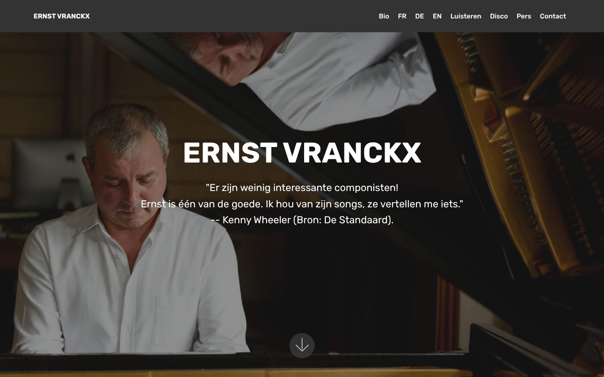

Drie uitgewerkte ontwerpen voor de homepage, telkens met dezelfde inhoud: het nieuwe album, biografie, discografie, pers, live en contact. Ze verschillen in sfeer en karakter. Klik een ontwerp open om het volledig te bekijken. Elk ontwerp werkt ook op gsm.
Lees de UX-audit: wat we aan elk ontwerp verbeterd hebben, met scores voor en na.
